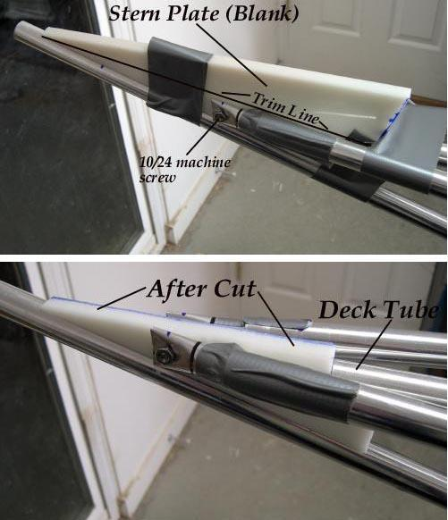

| Bow and Stern Plates (3 of 3) | Menu Previous Page Next Page |
|  |
Construction Details - Align the plate blank and the gunwale tubes and use duct tape to hold everything firmly in place. Drill the machine screw holes in the flattened gunwale insert. Drill and attach screws.
Mark the plate along the slope of the gunwales. Remove the plate, and cut along the line. Remount the plate, and drill the keel for the 1" stainless screws. (2ea) It's important that the plate not have a different height or slope than the gunwales as it makes skinning the ends more difficult.
|